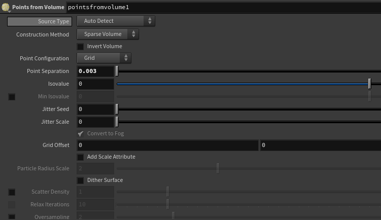

← 部落格 × Harbour
Bomin Kim（特效）

第 4 週
團隊成員
2 月 2 日
Bomin Kim（特效）
Caleb Stovall（3D／2D）
Mojie Tang（特效）
Sydney Relkin（合成）
Yiqi Zheng（特效）
SCAD × HARBOR － 第 4 週
大家好，這是我 SCAD × Harbor 部落格的第四週！
導師回饋：
Vi：
-
手錶上的 shader？看起來像兩種 shader，零件之間要更分明
-
鏡頭 2 的追蹤：把佈局和攝影機定下來！
-
鏡頭 01：不平衡
Hailey：
-
最後一個鏡頭的設計改得很好
-
鏡頭 04 還沒合成？泡泡又暗又實
-
鏡頭 01：畫面需要更有力
Kyle：
-
火焰應該要像噴槍
-
鏡頭 01 和 02：追蹤會改，把手的調色壓暗，鏡頭 01 拉近
-
鏡頭 02：拿掉手（全 CG），拉近到傾倒的部分
-
鏡頭 04：改善燈光，更戲劇化
-
鏡頭 05：燈光要一致，金屬錶帶不要那麼亮
-
開始調色／重新構圖
Billy：
-
把手裁掉
-
Rolex：研究一下金屬
Molly：
-
鏡頭 03：怎麼連接 FLIP 4 和 3？
-
跳過鏡頭 5 或 3
-
看 YouTube 上手錶零件的影片（naked watchmakers）
熔融白金：
討論後，我們決定把鏡頭 01 和 02 改成全 CG。鏡頭 02 改成呈現熔融白金倒進模具，模具的形狀是手錶的一部分。下一個鏡頭是水倒在手錶上，接著是泡泡的鏡頭。這個修改讓故事線更流暢，觀眾也更能理解製作手錶的過程。另外，我們刪掉了組裝手錶的鏡頭 05。
測試 1（算圖）
流體邊緣還是有點塊狀，一開始液體也會斷斷續續地分開。我還在持續改善。
測試 2（Flipbook）

這是傾倒模擬的 flipbook。邊緣看起來好多了，我也加了煙霧。我調整了倒杯的角度並降低點間距，讓傾倒更細緻。
我把運算改成 Gaussian，讓流體更平滑。
煙霧：
我上網查了資料，現實中熔融白金會和空氣反應產生蒸氣。因此我選取流體表面作為煙霧的來源。
參考
測試 1（煙霧）
這是煙霧單獨的樣子。